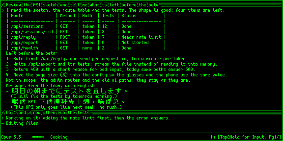
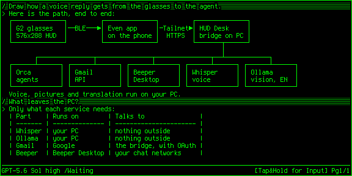
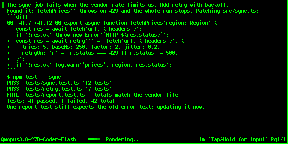
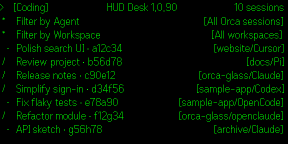
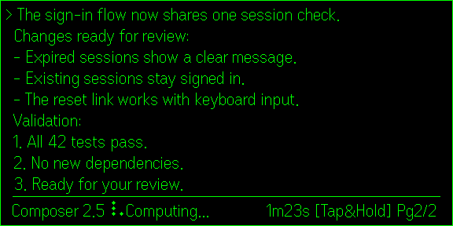
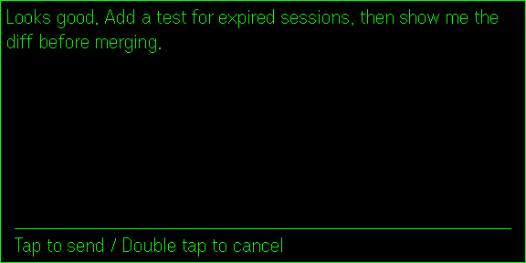
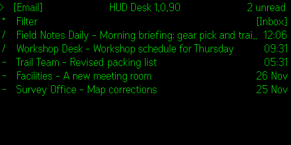
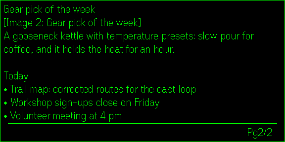
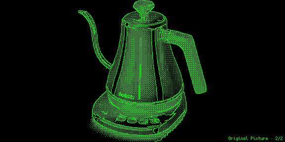
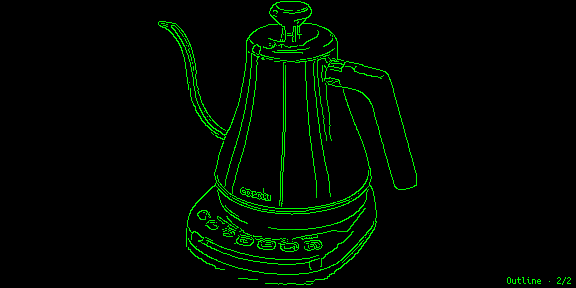
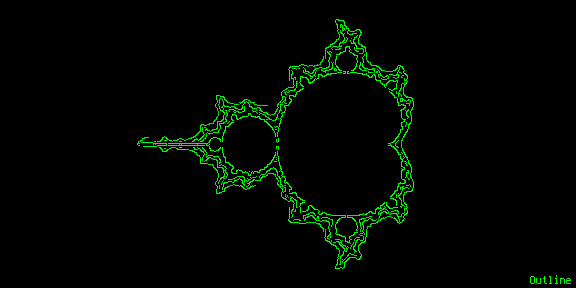
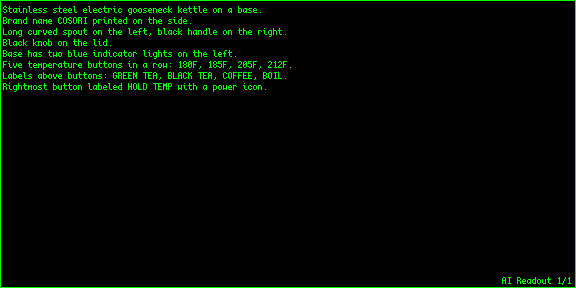
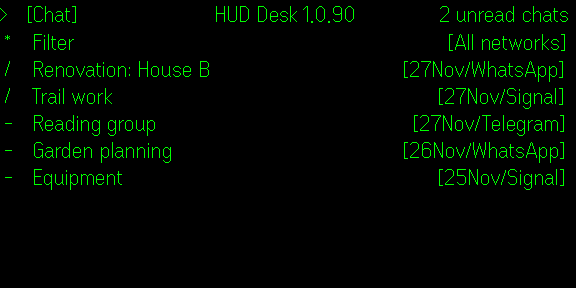
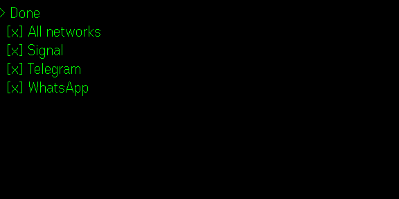
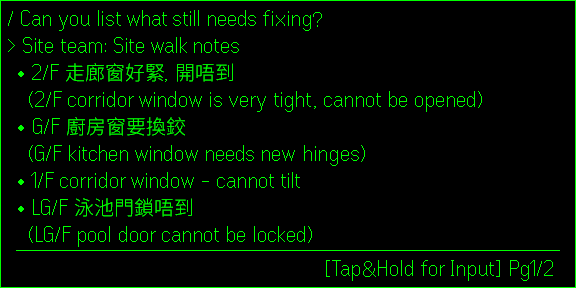
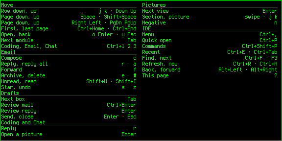
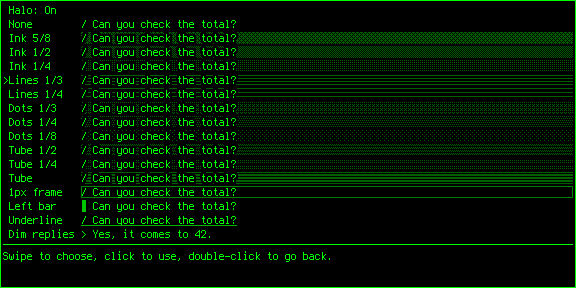
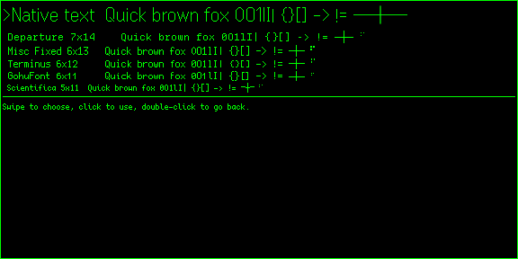

Read your agent sessions, email and chats on G2. Talk, type on a Bluetooth keyboard, open pictures.
Seventeen native simulator captures and one rendered keys page (beta 1.0.90 code), plus an older phone-page capture. Upload the transparent originals (screenshots/native): the portal lays them over its Environment photo; it keeps at most 8. Sessions, mail and chats are fictional; the pictures are a kettle product photo and an ffmpeg Mandelbrot. No real conversations, credentials, usage or microphone audio appear.
Current description · Listing statusFormerly Orca Glass; the plugin ID stays com.eugene8080.orcaglass.


















Read your agent sessions, email and chats on G2. Talk, type on a Bluetooth keyboard, open pictures. HUD Desk (renamed from Orca Glass) connects G2 to agents in Orca on your Windows PC, to Gmail and to Beeper chats. The top row switches Coding, Email and Chat. Coding: - Claude, Codex, Cursor, OpenCode, Pi, OpenClaude and Hermes Agent sessions with model and status; Orca chat sessions read-only. - Filter by Agent and Workspace. Usage for Codex, Claude and Cursor. - Hold to talk: local Whisper on your PC, review, then send. Answer numbered choices. Email (Gmail): - One mailbox at a time, Filter by Label with voice or typed search. Opening a thread marks it read. - With a keyboard: compose, reply, reply all, forward, archive, delete, star and undo with Gmail's keys. Drafts show on the glasses; review, then send. - Pictures in mail, newsletter images included. Chat (Beeper: WhatsApp, Signal, Telegram and more): - Rows show the day and the app; Filter by Network; formatting kept. - Voice notes transcribed (Cantonese tuned). English under each line. Photos open on the glasses. Pictures: Original Picture (tuned for G2), Zoom in sections, Outline, and AI Readout: a local vision model describes the picture. Keyboard: Gmail-style keys everywhere, VS Code-style Ctrl+P, Ctrl+Shift+P, Ctrl+Tab, Ctrl+F; ? shows every key. Reader: book-style pages in Native text or pixel fonts, down to Scientifica 5x11 (114 columns), with Chinese and Japanese; backgrounds (lines, dots, Tube scanlines, left bar, underline); App Brightness. English and Japanese. Requires G2, the Even Realities app (iPhone untested), Orca and the companion bridge on your PC over Tailscale; self-service setup for any PC is not offered yet. Agents, mail, chats, voice and AI run on your PC. Try the demo without a PC. Source/setup: https://github.com/eugene8080/orca-glass/tree/windows-android-codex Independent fork of 2ero20ne's Orca Glass under MIT. Original: https://github.com/2ero20ne/orca-glass